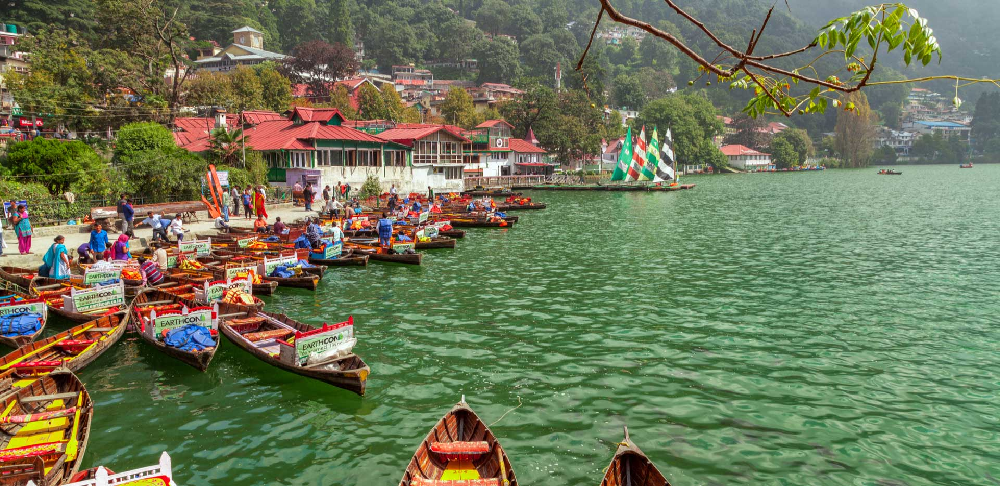
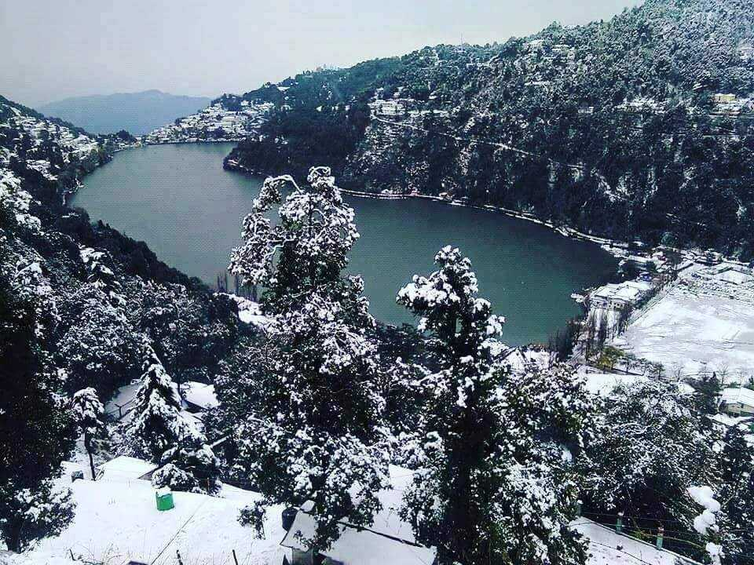
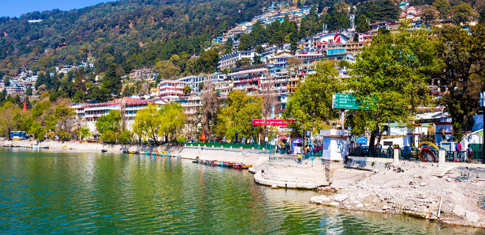

Nainital is a glittering jewel in the Himalayan necklace, blessed with scenic natural spledour.
Being a popular destination among tourists, there are many places of interest in and around Nainital
that can be visited with family and friends.
How to reach there?
Nainital is located in the Kumaon region of Uttarakhand.Kathgodam railway station, about 23 kms away from Nainital,
is the nearest railhead serving this gorgeous hill station.Among airways,the Pantnagar airport is the nearest airport to Nainital
which is situated at a distance of 70 kms.
Top things to do?
If we check out the most visited tourist spots in Nainital, Snow view point is surely the most visited and loved spot by people all over.
And if you want to have something out of box , go for Mall road. Needless to say, you can visit numbers of
lake (Nainital lake, Bhimtal lake, Sattal and many more).


